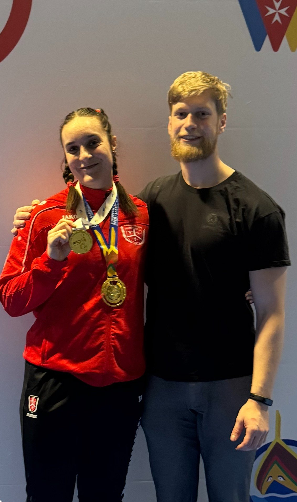
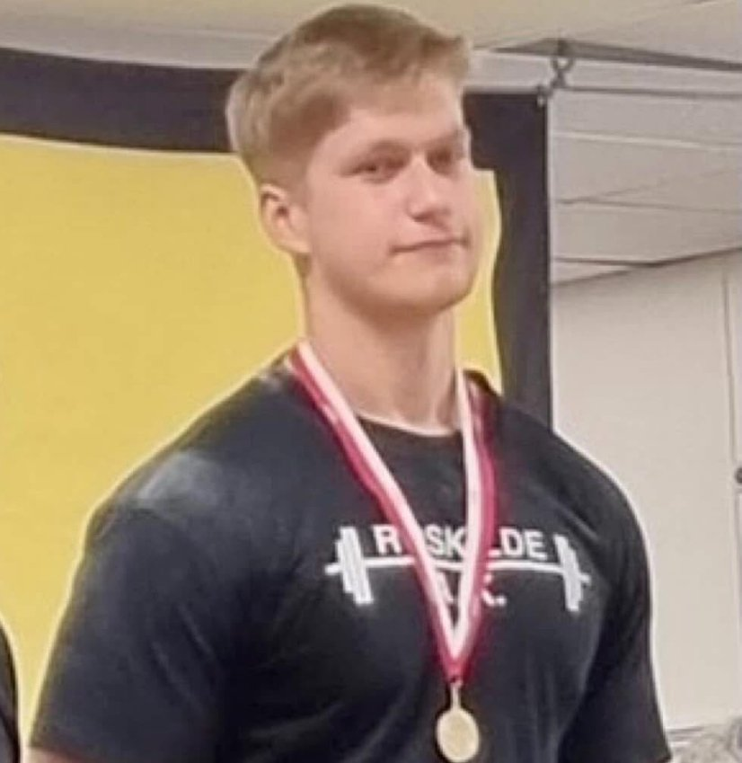

Resultater
Resultater fra atleter coached under Entropi og fra Marc selv som konkurrenceløfter. Navne holdes private med respekt for atleternes privatliv.
Seneste resultat

Guldmedalje ved EPF Europamesterskabet i dødløft. Atletens præstation placerede hende som historisk stærkeste i sin vægtklasse i Danmark målt på kvinders IPF point, og stærkeste overall på tværs af alle klasser. Bygget på systematisk teknisk arbejde, datadrevet programmering og en konkurrencestrategi uden gætteri.
Alle resultater
Guldmedalje i dødløft. Historisk stærkeste i klassen i Danmark på kvinders IPF point.
Top-1 placering nationalt med flere nationale rekorder sat under samarbejdet. Fortsat stærk udvikling på junior-niveau.
Coaching af atleter på tværs af klasser og niveauer med dokumenterede præstationsfremgange ved nationale stævner.
Som løfter
Foruden coaching har Marc konkurreret aktivt i styrkeløft siden han var 16. Den personlige erfaring fra platformen er integreret i coaching-tilgangen. Det er svært at forstå hvad en atlet gennemgår uden selv at have stået der.
Højdepunktet kom i 2021 med guld i bænkpres ved junior-DM som 22-årig, efter seks år med systematisk teknik- og programmeringsarbejde.
